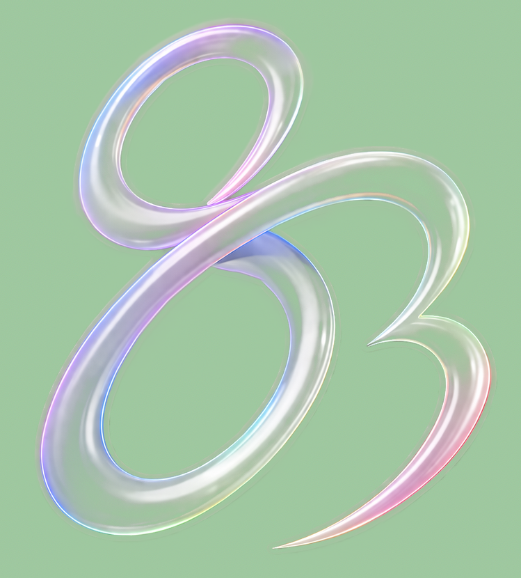
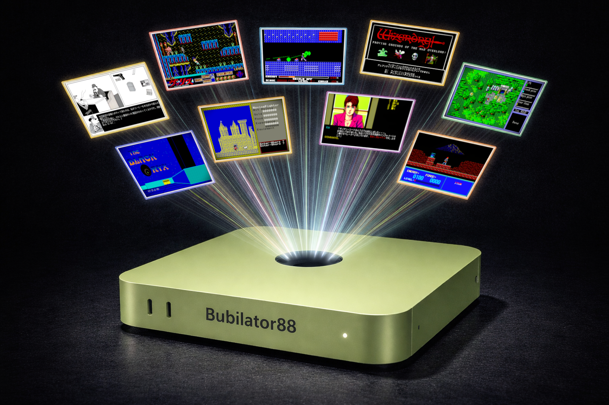
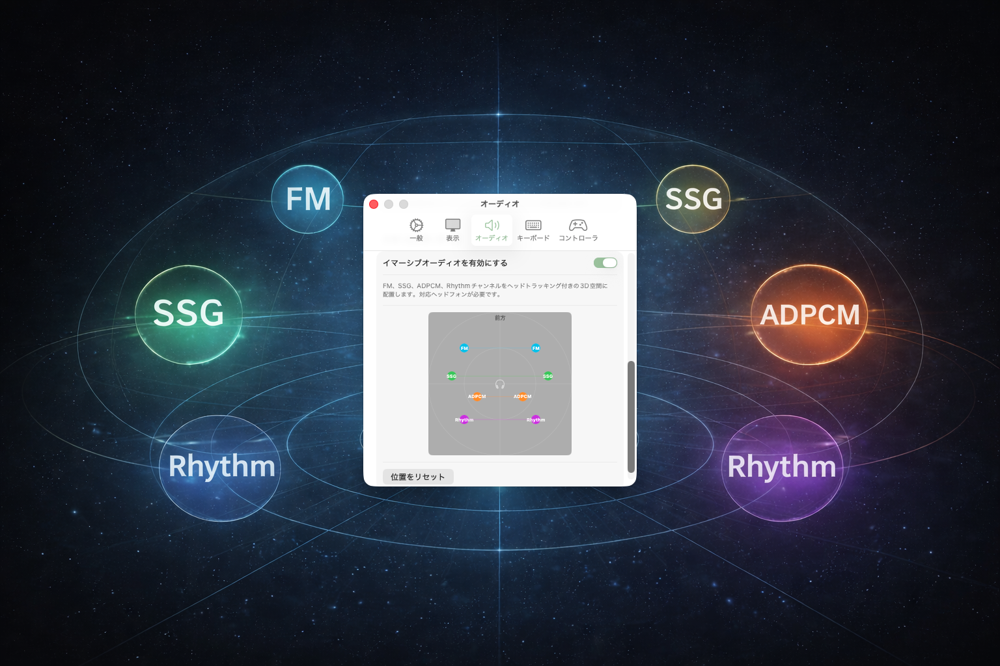
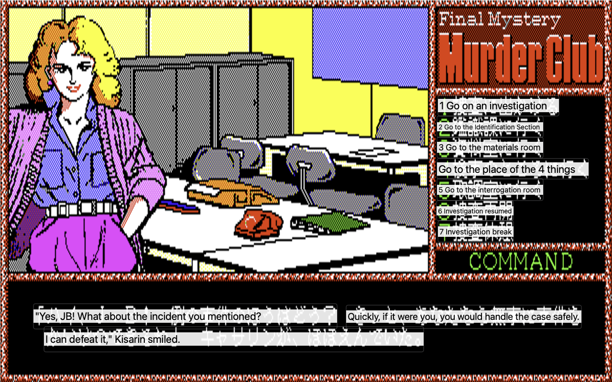
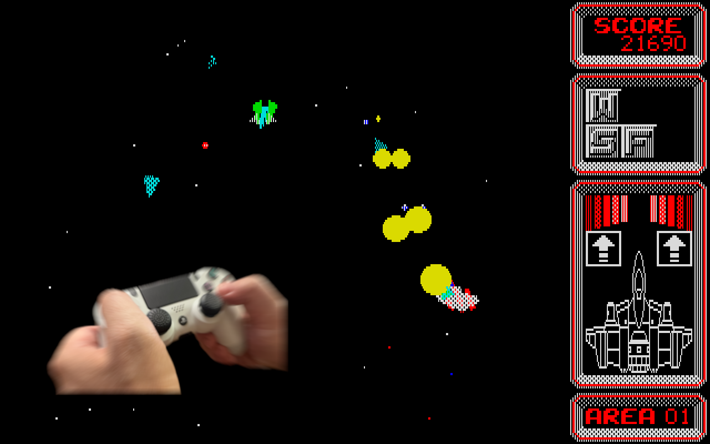
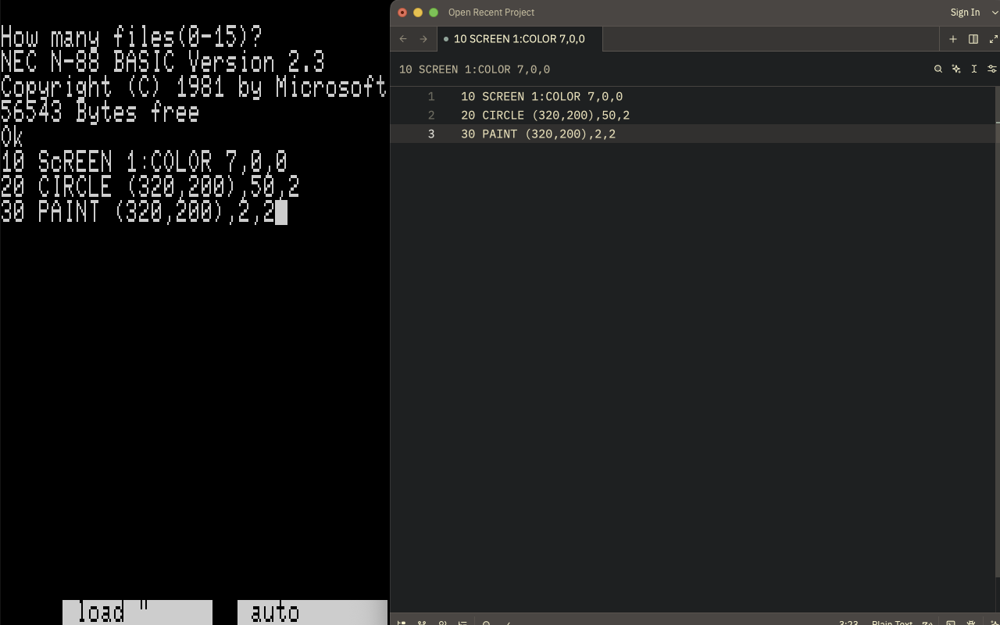
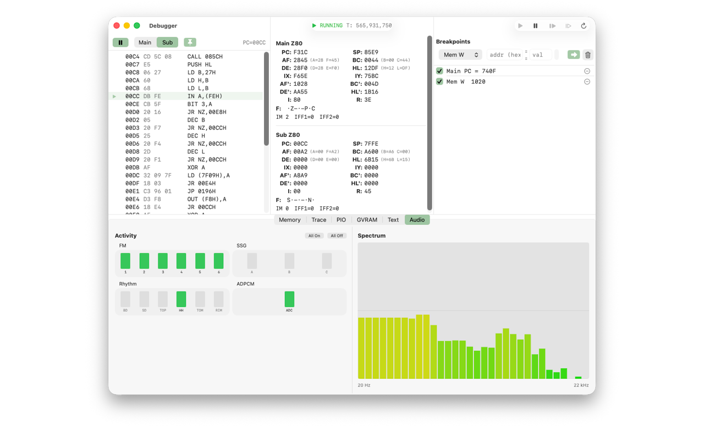

© [Game title] / [Publisher]
01
AI Upscaler
Real-time super-resolution on Apple Neural Engine. Sharpen 640×400 pixel art while preserving edges and detail — three model sizes from ultra-fast to reference quality.

Bubilator88A Modern PC-8801 Emulator for macOS
Built almost entirely with AI. For Apple Silicon, with spatial audio, AI upscaling, and real-time translation.



Retro PC emulation demands deeply specialized knowledge — undocumented hardware behavior, T-state-accurate timing, multiple LSIs cooperating in real time. Bubilator88 is the experiment: an emulator where nearly every line of code is written by AI (Claude / Codex).
Retro PC emulation has long been a Windows-centric world. Mac users were left with virtualization layers or non-native ports. Bubilator88 is built from the ground up for macOS — SwiftUI, Metal, AVAudioEngine, Apple Neural Engine, all the way down.
See, hear, and feel what makes Bubilator88 different.
Real-time super-resolution on Apple Neural Engine. Sharpen 640×400 pixel art while preserving edges and detail — three model sizes from ultra-fast to reference quality.
CRT scanlines and phosphor afterglow, or xBRZ pixel-art edge scaling — all implemented as native Metal shaders for 60 fps playback, even at retina resolution.

Place each sound channel — FM, SSG, ADPCM, Rhythm — anywhere in 3D space using an intuitive position pad. Head-tracked through AirPods for true immersive audio.

Apple Vision OCR combined with the Translation framework reads on-screen Japanese in real time and overlays your language on top of the emulated display.

Full game controller support with rumble synced to SSG sound effects. Every explosion, every footstep — you can feel it in your hands, just like the arcade.
Best experienced with headphones.
Add subtle per-channel delay differences to a mono source and retro music opens up into a wider stage. Compare the before and after — the effect is unmistakable on headphones.

Copy on-screen text straight into the macOS clipboard, or paste BASIC listings back into the emulator as keystrokes — no more hand-typing program magazines.

Disassembler, dual-CPU registers, six breakpoint types, instruction and PIO ring-buffer tracing with JSONL export, GVRAM and Text VRAM inspectors, and a live spectrum analyzer with per-channel mute.
The essentials that make the emulator tick.
Instruction-granular timing. Software-visible hardware behavior, reproduced faithfully.
FM 6ch + SSG 3ch + Rhythm + ADPCM. Low-latency output via AVAudioEngine.
10 slots plus Quick Save (Cmd+S / Cmd+L). Thumbnails and metadata per slot.
D88 / D77 / 2D / 2HD floppies, T88 / CMT tapes. Drag in ZIP / LZH / CAB / RAR archives and pick images directly.
Built with SwiftUI, Metal, AVAudioEngine, and CoreML. Optimized for M-series Macs.
Authentic floppy drive seek and access sounds. Togglable in settings.
macOS 26.0 (Tahoe) or later
Apple Silicon (M1 or later). M4 Pro+ recommended for AI Upscaling.
PC-8801 ROM files are not included. Place them in ~/Library/Application Support/Bubilator88/
Grab the latest .app from GitHub Releases.
The app is not notarized. Run xattr -cr /Applications/Bubilator88.app or allow it in System Settings > Privacy & Security.
Drop N88.ROM, DISK.ROM, and friends into ~/Library/Application Support/Bubilator88/. See the README for the full list.
Bubilator88 stands on the shoulders of incredible prior work. Deep thanks to everyone below.
Ported to Swift as the core of the YM2608 sound engine.
Consulted constantly as the authoritative behavioral reference.
Another indispensable reference implementation (BubiC-8801MA).
A third indispensable reference, especially for Z80 undocumented instructions and countless implementation details.
The go-to dictionary for PC-8801 hardware specifications.
The definitive guide to VRAM access behavior.
The pixel-art scaling algorithm that became the base of the Enhanced filter.
Base super-resolution model, converted to CoreML.
The partners who actually wrote nearly every line of this code.